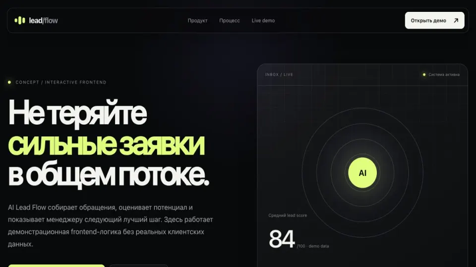

Concept · Live demo
AI Lead Flow: от входящей заявки к следующему действию.
Интерактивный frontend-концепт для команды продаж: заявки попадают в единый поток, получают демонстрационный lead score и понятный следующий шаг.

Задача
Что нужно было показать
Портфельная задача — показать, как интерфейс может помочь менеджеру быстрее увидеть сильные заявки в общем потоке. Реальные клиентские данные и backend в демонстрации не используются.
Решение
Как устроен концепт
Собран сценарий от входящего обращения до карточки лида: источник, интерес, score, приоритет и рекомендуемое действие. Пользователь может пройти сценарий прямо в браузере и проверить логику интерфейса.
User flow
Сценарий от входа до результата
- 01
Заявка попадает в единый входящий поток.
- 02
Правила и демонстрационный lead score подсвечивают приоритет.
- 03
Менеджер видит причину оценки и рекомендуемое следующее действие.
Решения
Почему интерфейс устроен так
- Объяснимая оценка вместо скрытого результата
- Единая карточка с контекстом заявки
- Возможность ручного решения на каждом шаге
Границы
Что этот кейс не обещает
- Backend и настоящая CRM не подключены
- Правила оценки используют демонстрационные данные
- Сообщения клиентам автоматически не отправляются
Что реализовано
- Единый inbox обращений
- Демонстрационный lead score
- Приоритет и статус заявки
- Подсказка следующего действия
- Адаптивный интерфейс
- Честная маркировка demo data
Технологии
Next iteration
Что потребуется для рабочей версии
- Подключить форму, почту или мессенджер
- Настроить критерии на реальных заявках
- Добавить CRM, журнал действий и аналитику
Похожие решения
Этот кейс показывает один конкретный сценарий. В каталоге решений собраны варианты для заявок, записи, торговли, CRM и AI-помощников.